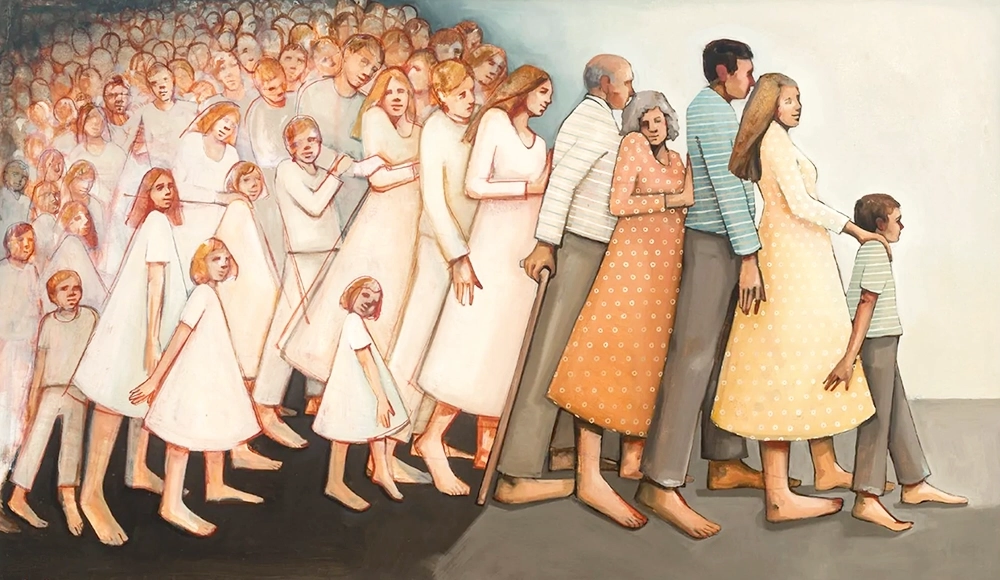

Las constelaciones familiares son una técnica terapéutica que se basa en la mirada sistémica. Se puede realizar en grupo o en formato individual.
Se trata de ampliar la mirada para ver que aquel problema o malestar que tenemos no existe sólo a nivel individual sino que en la medida en que todos formamos parte de un sistema más grande, familiar, laboral, social, lo que nos sucede también tiene relación con estos sistemas.
Es un técnica breve y se basa en la escenificación de los asuntos problemáticos para ver con claridad qué rol está ocupando la persona, donde se bloquea o dificulta y desde ahí posibilitar otros caminos de solución.
Las Constelaciones facilitan la comprensión de las dinámicas inconscientes que mantienen los problemas, sacándolas a la luz y dándonos así la oportunidad de cambiarlas. La constelación se proyecta hacia el futuro y hacia movimientos de solución.
Técnica Grupal de Constelaciones: La persona escenifica el asunto que le dificulta el vivir con el resto de integrantes del grupo y de este modo se obtiene una representación que refleja lo que le está sucediendo a la persona, permitiendo que la imagen interna sea representada en el exterior, posibilitando ver que dinámicas y lealtades familiares ocultas están en juego. Ante esta información el terapeuta interviene y se busca sin forzar una imagen de solución y de fuerza hacia el futuro.
Técnica Individual de Constelaciones: En este caso como no habrá otras personas, nos ayudaremos de elementos como pueden ser cojines, hojas de papel o muñecos. Con muñecos podremos representar la imagen de la familia o sistema que necesitemos y tendremos un impacto visual del asunto que nos aportará consciencia acerca de qué lugar estamos ocupando en la situación.
Te dan un espacio para empezar a dibujar tu genograma o árbol familiar e ir descubriendo aquellos asuntos sistémicos que afectan a tú vida y tus relaciones. También son una buena opción para aquellas personas que desean profundizar algún aspecto trabajado en una constelación grupal. Sin duda son una buena oportunidad para regalarnos un espacio de comprensión, sanación y apertura a nuevas posibilidades.